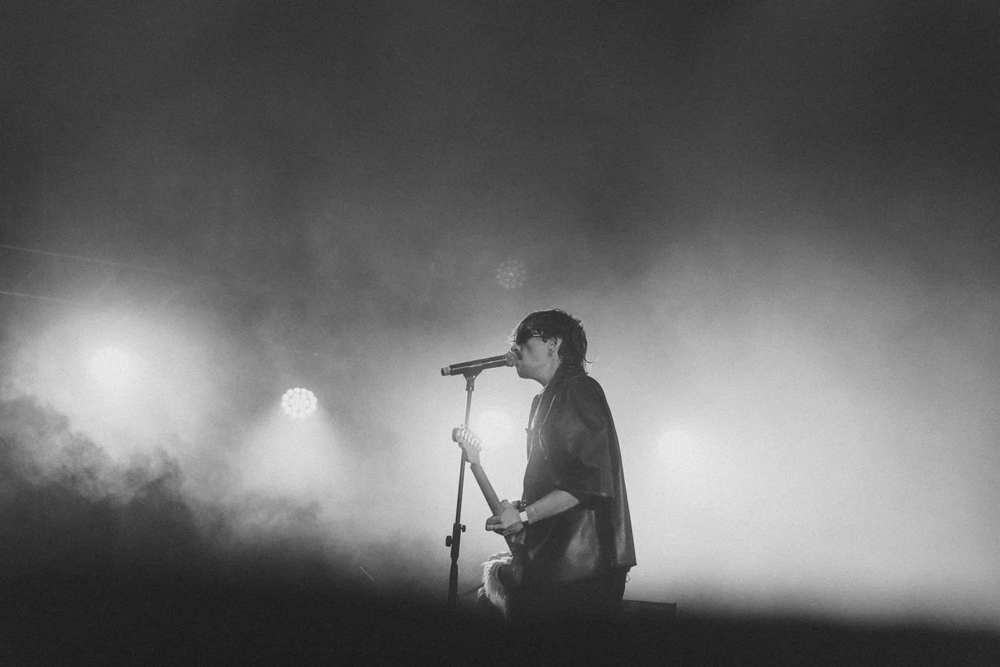
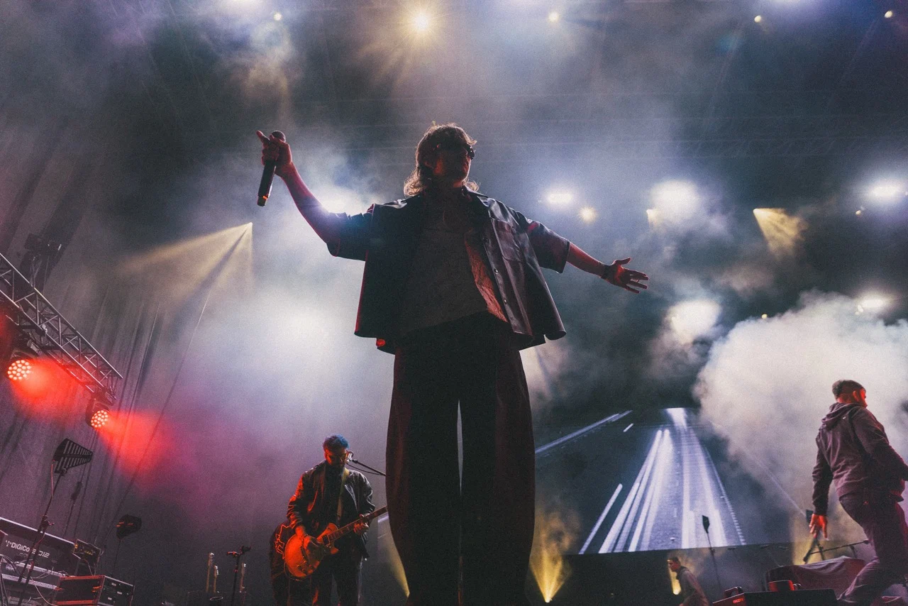
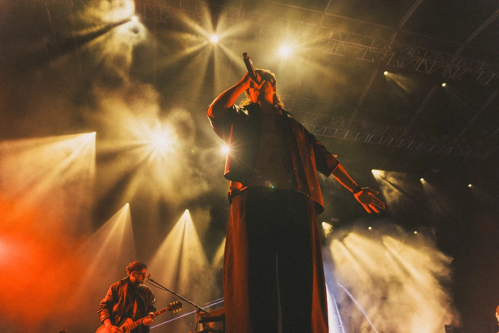
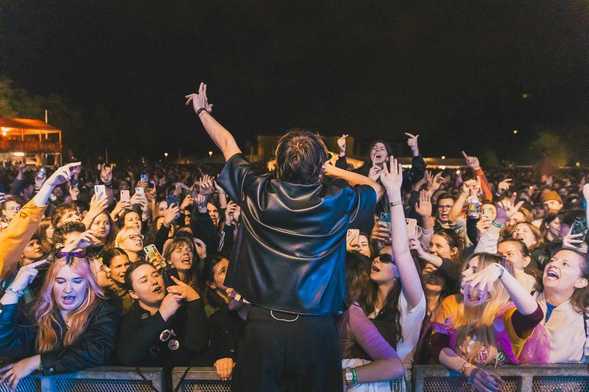

MRFY
 01 / 1402 / 1403 / 1404 / 1405 / 1406 / 1407 / 14
01 / 1402 / 1403 / 1404 / 1405 / 1406 / 1407 / 14
08 / 14
09 / 14
10 / 14
11 / 1412 / 1413 / 1414 / 1401 / 1402 / 1403 / 1404 / 1405 / 1406 / 1407 / 14
08 / 14
09 / 14
10 / 14
11 / 1412 / 1413 / 1414 / 14